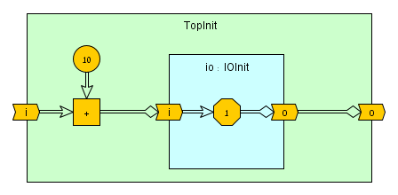
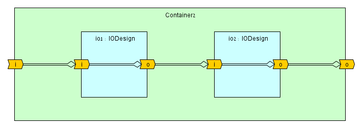

Hierarchy and Connectivity
DFHDL supports composable design hierarchies by instantiating design classes and connecting ports.
Terminology
- design - A Scala class extending
XXDesign, whereXXcan beDF,RT, orED, corresponding to the desired design domain. - design member - Any DFHDL object instantiated within a design (the design contains or owns all its members).
- child design/component - A design instance that is owned by another design.
- top design - The highest-level design in the hierarchy (no other design contains it), also known as the top-level design.
- top-app design - A
@topannotated top design that generates a main entry with the default application.
Design Declaration
Syntax
A DFHDL design declaration follows the standard Scala class syntax, with specialized handling by the DFHDL Scala compiler plugin under the hood.
/** _documentation_ */
@top(genMain) //required only for top-level designs
class _name_(_params_) extends XXDesign:
_contents_
end _name_ //optional `end` marker
_name_is the Scala class name reference for the design you declared. The DFHDL compiler preserves this class name and uses it in error messages and the final generated artifacts (e.g., Verilog modules or VHDL entities). See the naming section for more details.(_params_)is an optional parameter block. The parameter block can include either Scala parameters that are inlined for the design elaboration stage or DFHDL design parameters that are preserved through the design elaboration and compilation stages. If you do not need parameters, Scala syntax accepts both empty parentheses()and no parentheses. See Parameter Block Syntax for more information._XXDesign_is the class to extends depending on the desired design domain, whereXXcan beDFfor dataflow,RTfor register-transfer, orEDfor event-driven._contents_are the design interface (ports/interfaces/domains) and functionality (variables, functions, child designs, processes, etc.), depending on the semantics of the selected design domain.@top(genMain)is a special obligatory annotation for top-level designs (designs that are instantiated not within another design). The annotation has an optionalval genMain: Boolean = trueparameter. WhengenMain = false, all this annotation is doing is providing a default top-level context for the design (e.g., implicit/given compiler options). WhengenMain = true, the design becomes a top-app design where all design parameters must have default values, and a main Scala entry point in the nametop__name_is generated (e.g., for a top-app design namedFoo, the entry name is namedtop_Foo)._documentation_is the design documentation in Scaladoc format. This documentation is a meta information that is preserved throughout the compilation process and finally generated as documentation for the generated backend code.
Basic top-app design example: a two-bits left shifter
The DFHDL code below implements a two-bits left shifter design named LeftShift2 under register-transfer (RT) domain semantics, as indicated by the class LeftShift2 extending RTDesign. The design has one 8-bit input port and one 8-bit output port and implements the 2-bit leftshift functionality by applying it on the input and assigning it to the output.
1 2 3 4 5 6 7 8 9 10 11 12 | |
This design is also a top-app design, since it's annotated with @top. This means that we have an executable Scala program that compiles the design and generates a Verilog or VHDL backend code. The backend configuration option can be set via a CLI argument, or alternatively, be set via an implicit backend setting like in the code above. The @top annotation captures the implicit/given options within its scope and feeds them to the top-app CLI program as default to run when no CLI arguments are given.
1 2 3 4 5 6 7 8 9 10 11 12 13 14 | |
1 2 3 4 5 6 7 8 9 10 11 12 13 14 15 16 17 18 19 20 | |
Runnable example
import dfhdl.*
//optionally set the default backend configuration option
//(can be overridden by the top-app CLI)
given options.CompilerOptions.Backend = backends.verilog
/** A two-bits left shifter */
@top class LeftShift2 extends RTDesign:
/** bits input */
val iBits = Bits(8) <> IN
/** bits output */
val oBits = Bits(8) <> OUT
oBits := iBits << 2
Parameter Block Syntax
Just like any Scala class parameter blocks, the DFHDL design accepts a sequence of comma-delimited parameter declarations.
([_access_] _name_: _type_ [= _default_], ...)
_type_is either a pure Scala parameter type or a DFHDL parameter type in the form ofDFType <> CONST.- Pure Scala parameters are completely transparent to the DFHDL compiler and are inlined during elaboration. Any type of pure Scala parameter is acceptable, except for top-app design parameters which are currently limited to
String,Boolean,Int, andDoubletypes. - DFHDL parameters are preserved throughout the compilation process and manifest as parameters in the generated backend code. Top-app design DFHDL parameters are currently limited to
Int <> CONST,Bit <> CONST, andBoolean <> CONSTtypes.
- Pure Scala parameters are completely transparent to the DFHDL compiler and are inlined during elaboration. Any type of pure Scala parameter is acceptable, except for top-app design parameters which are currently limited to
_name_is the Scala parameter name reference. The DFHDL compiler preserves this parameter name for DFHDL parameters types only. For the top-app command-line interface (CLI), these names are also preserved, so that the parameters can be listed and modified through the CLI._default_is the optional default value of the parameter. According to the Scala language rules, once a parameter has a default value defined, all parameters that follow it must also have default values defined. For top-app designs, all parameters must have default values._access_is the optional Scala parameter access modifier. By default a Scala class parameter access isprivate val. If the parameter affects the type of a public value (e.g., width of a DFHDL port) then the
Scala-parameterized top-app design example: a basic left shifter
The DFHDL code below implements a basic left shifter design named LeftShiftBasic. This design is similar to the earlier example of LeftShift2 except here the design has the shift value as an input, and its input and output port widths are set according to the Scala parameter width.
1 2 3 4 5 6 7 8 9 10 11 | |
1 2 3 4 5 6 7 8 9 10 11 12 13 14 15 16 | |
1 2 3 4 5 6 7 8 9 10 11 12 13 14 15 16 17 18 19 20 21 22 | |
Runnable example
import dfhdl.*
given options.CompilerOptions.Backend = backends.verilog
/** A basic left shifter */
@top class LeftShiftBasic(
val width: Int = 8
) extends RTDesign:
/** bits input */
val iBits = Bits(width) <> IN
/** requested shift */
val shift = UInt.until(width) <> IN
/** bits output */
val oBits = Bits(width) <> OUT
oBits := iBits << shift
DFHDL-parameterized top-app design example: a generic left shifter
The DFHDL code below implements a generic left shifter design named LeftShiftGen. This design is similar to the earlier example of LeftShiftBasic except here the width parameter is now a DFHDL parameter as indicated by its Int <> CONST type. This enables the DFHDL compiler to preserve the parameter name and directly use it in the generated backend code where applicable.
1 2 3 4 5 6 7 8 9 10 11 12 13 14 15 | |
1 2 3 4 5 6 7 8 9 10 11 12 13 14 15 16 17 18 19 20 | |
1 2 3 4 5 6 7 8 9 10 11 12 13 14 15 16 17 18 19 20 21 22 23 24 25 26 27 28 | |
Runnable example
import dfhdl.*
given options.CompilerOptions.Backend = backends.verilog
/** A generic left shifter
*
* @param width
* the width of the input and output bits
*/
@top class LeftShiftGen(
val width: Int <> CONST = 8,
) extends RTDesign:
/** bits input */
val iBits = Bits(width) <> IN
/** requested shift */
val shift = UInt.until(width) <> IN
/** bits output */
val oBits = Bits(width) <> OUT
oBits := iBits << shift
Design Composition & Instantiation
DFHDL supports three mechanisms to form a design hierarchy through design instantiation and composition:
- Direct Connection Composition - The most common and recommended mechanism to construct complex design hierarchies that have multiple inputs and outputs. Within this mechanism the design instantiation and port connection can executed separately. This enables child design ports referencing without declaring and connecting intermediate variables.
- Via Connection Composition - A legacy mechanism to connect ports only within a design instantiation. This mechanism mainly exists for co-existance with the Verilog module instancing and VHDL component instancing mechanisms. The DFHDL compiler automatically tranforms a direct connection composition into a via connection composition.
- Functional Composition - A method call mechanism to describe design composition. This mechanism is reserved for dataflow designs only and is mostly relevant for arithmetic/logic design functionality that has a single output port. The DFHDL compiler automatically transforms a functional composition into direct design composition.
The following subsections dive into further details of the three design composition mechanisms. For this purpose, we continue with our running example of a bits shifter. To demonstrate composition, lets first describe a bit more complex shifter that has both left and right shift capabilities, as a flat (composition-less) design:
Generic left-right shifter, flat design example
The DFHDL code below implements a generic left-right shifter flat design named LRShiftFlat. This design expands on LeftShiftGen by adding a dir enum port value that specifies the shift direction and a shift operation multiplexer through a match statement.
1 2 3 4 5 6 7 8 9 10 11 12 13 14 15 16 17 18 19 20 21 22 | |
1 2 3 4 5 6 7 8 9 10 11 12 13 14 15 16 17 18 19 20 21 22 23 24 25 26 27 28 | |
1 2 3 4 5 6 7 8 | |
1 2 3 4 5 6 7 8 9 10 11 12 13 14 15 16 17 18 19 20 21 22 23 24 25 26 27 28 29 30 31 32 33 34 35 36 | |
1 2 3 4 5 6 7 8 9 10 11 12 13 14 15 16 17 18 19 20 21 22 23 24 25 26 27 28 29 30 31 32 33 34 35 36 37 38 39 40 41 42 43 44 45 46 47 48 49 50 51 | |
Runnable example
import dfhdl.*
given options.CompilerOptions.Backend = backends.verilog
enum ShiftDir extends Encode:
case Left, Right
/** A left-right bits shifter (flat version)
*
* @param width
* the width of the input and output bits
*/
@top class LRShiftFlat(
val width: Int <> CONST = 8
) extends RTDesign:
/** bits input */
val iBits = Bits(width) <> IN
/** requested shift */
val shift = UInt.until(width) <> IN
/** direction of shift */
val dir = ShiftDir <> IN
/** bits output */
val oBits = Bits(width) <> OUT
dir match
case ShiftDir.Left => oBits := iBits << shift
case ShiftDir.Right => oBits := iBits >> shift
Direct Connection Composition
Via Connection Composition
Functional Composition
Rules
Design class inheritance
It is possible to leverage the power of Scala inheritance to share design functionality between design class declarations.
Design class inheritance example: left and right shifters
The DFHDL code below implements a generic left shifter design named LeftShiftGen. This design is similar to the earlier example of LeftShiftBasic except here the width parameter is now a DFHDL parameter as indicated by its Int <> CONST type. This enables the DFHDL compiler to preserve the parameter name and directly use it in the generated backend code where applicable.
1 2 3 4 5 6 7 8 9 10 11 12 13 14 | |
1 2 3 4 5 6 7 8 9 10 11 12 13 14 15 16 17 18 19 20 | |
1 2 3 4 5 6 7 8 9 10 11 12 13 14 15 16 17 18 19 20 21 22 23 24 25 26 27 28 | |
Runnable example
import dfhdl.*
given options.CompilerOptions.Backend = backends.verilog
/** A generic abstract shifter
*
* @param width
* the width of the input and output bits
*/
abstract class ShiftGen(
val width: Int <> CONST = 8,
) extends RTDesign:
/** bits input */
val iBits = Bits(width) <> IN
/** requested shift */
val shift = UInt.until(width) <> IN
/** bits output */
val oBits = Bits(width) <> OUTDesign class modifier limitations
A DFHDL design class cannot be declared as final class or case class. Attempting to do so produces an error:
| DFHDL design class modifier limitation example | |
|---|---|
1 2 3 4 | |
protected).
Design parameter limitations
Top-app design parameter type limitations
Design Instantiation
Key Differences Between <> and :=/:==
| Criteria | <> Connection |
:=/:== Assignment |
|---|---|---|
| Directionality & Commutativity |
The operator is commutative, meaning a <> b is equivalent to b b <> a. One argument is the producer, while the other consumer. The dataflow direction is sensitive to the context in which the operator is applied. |
The operator is non-commutative, meaning a := b determines that b is the producer, transferring data to the consumer a. |
| Mutation | A consumer can only be connected once. | Consumer assignments are unlimited. |
| Statement Order | Connections statements can be placed in any order. | Assignment statements |
Connection <> Rules
Port Direct Connections
The onnection operator <> is generally used to connect parent designs to their child designs (components) and connect between sibling designs (children of the same parent). Opposed to VHDL/Verilog, there is no need to go through 'signals' to connect sibling design ports, e.g.:
1 2 3 4 5 6 7 8 9 10 11 12 13 | |
Port Via Connections
1 2 3 4 5 6 7 8 9 10 11 12 13 14 15 16 17 18 19 20 21 22 | |
Runnable example
import dfhdl.*
class Plus1 extends DFDesign:
val x = UInt(8) <> IN
val y = UInt(8) <> OUT
y <> x + 1
@top class Plus2 extends DFDesign:
val x = UInt(8) <> IN
val y = UInt(8) <> OUT
val p1A = Plus1()
val p1B = Plus1()
p1A.x <> x
p1A.y <> p1B.x
y <> p1B.y
given options.CompilerOptions.PrintBackendCode = false
given options.CompilerOptions.PrintDFHDLCode = trueDataflow Value Connections
At least one of the connected sides must be a dataflow port (cannot connect two dataflow values together), e.g.:
1 2 3 4 5 6 7 | |
Dataflow Input Port Assignment := Rule
An input port cannot be assigned to. A connection must be used to transfer data to an input port, e.g.:
1 2 3 4 5 6 7 8 9 10 11 | |
Immutable Value Connections
When connecting a port to an immutable value, the port must be a consumer, meaning the connection is done internally to an output port or externally to an input port, e.g.:
1 2 3 4 5 6 7 8 9 10 11 12 13 14 15 | |
Different Type Connections
Connecting between different types is possible, but depends on the specific type: if it enables automatic conversion for the connection to succeed. Different port widths are considered different types and casting is required. An alias/casted/converted dataflow value is considered immutable for the connection (see above). Here are some examples:
1 2 3 4 5 6 7 8 9 10 11 12 13 14 15 16 17 18 19 20 21 22 | |
Multiple Connections
Two or more dataflow producers cannot be connected to the same consumer (a single producer can be connected to more than one consumer), e.g.:
1 2 3 4 5 6 7 8 9 10 11 12 13 14 15 16 17 18 19 20 | |
Mixing Assignments and Connections
The same consumer cannot be both assigned to and connected to as the consumer, e.g.:
1 2 3 4 5 6 7 8 9 10 11 12 13 | |
Connection Statement Order
The connection <> statement ordering does not matter.
Connection and Initial Conditions
A connection <> transfers initial conditions to the consumer, but if the consumer is already initialized then the consumer keeps its existing initial conditions. Here is an example:
1 2 3 4 5 6 7 8 9 10 11 12 13 14 | |

We learn from the above that port initial conditions are often overridden due to connections. So why should we apply initial conditions to a port? Answer: If we want to define what happens when a port is open (unconnected). Read the next two sections for more information.
Open (Unconnected) Ports
Ports have two connection sides: a consumer side and a producer side. Typically ports have both sides connected, except for top-level ports. When either port side is unconnected, we refer to it as open, and expect the following behavior:
-
When the port consumer side is open, the port produces tokens according to its initial condition. Uninitialized open-consumer ports generate bubble tokens.
-
When the port producer side is open (unless it is a top-level output port), the port is considered as not used, and is pruned during compilation. All dataflow streams that are only used by this port will be pruned as well.
Note: the current compiler implementation does not warn of open ports.
Example:
1 2 3 4 5 6 7 8 9 10 11 12 13 14 15 | |

Initial Condition Cyclic Loop Errors
Connections enable dataflow feedbacks and even dataflow dependency loops. There is no problem in dependency loops, other than pipelining limitations (see chapter TBD for more information). However, if we only apply connections and references that transfer initial conditions, we end up with a cyclic dependency for initial condition which is illegal. Therefore to enable dependency loops, at least one link in the loop must be an assignment, which has an implicit state and does not affect initial conditions. Consider the following examples:
1 2 3 4 5 6 7 8 9 10 11 12 13 14 15 16 17 18 19 20 21 22 23 24 25 26 27 28 29 30 31 32 33 | |

Note: when following the drawing convention within this document, we want to avoid a double-lined loop in order to avoid a cyclic initial conditions dependency.
Valid Connection and Assignment Examples
1 2 3 4 5 | |

1 2 3 4 5 6 7 | |

1 2 3 4 5 6 7 8 | |

1 2 3 4 5 6 7 | |

1 2 3 4 5 6 7 8 9 | |

1 2 3 4 5 6 7 8 | |

1 2 3 4 5 6 7 8 | |

1 2 3 4 5 6 7 8 9 10 11 12 13 14 15 16 17 | |

Note: although there is a feedback in this design, there is no circular initial conditions dependency.
Via Connections
Magnet Port Connections
Future Work
- In the future
<>will be used to connect multi-port interfaces. - We will add support to treat an alias of a port as a port when connection
<>rules are enforced. - Connecting between any ancestor which is not a parent and child. Currently not supported fully.